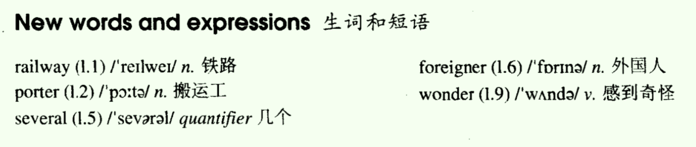

Lesson 25
一、单词讲解
1、railway：n. 铁路；
- railway station
2、porter：n. 搬运工；
3、several：几个；（量词：quantifier）
- 限定词，限定名词；
- 后面加可数名词复数，several times/people/things
4、foreigner：n. 外国人
- foreign：adj. 外国的，外国人的；
- a foreign language
- TOEFL = Test Of English as a Foreign Language
5、wonder：v. 感到奇怪；n. 奇迹、奇观；
- feel surprised
- want to know
- wander：溜达、闲逛；
All

二、课文&语法讲解
1、句子的分类（按照结构分类）
- a. 简单句：描述一件事的；
- b. 并列句：把多个简单句（事）连接在一起；
- c. 复合句：把多个简单句（事）连接在一起；
- 中文：连接多件事，只需要意思是关联的就行了，不需要加任何的连接词，加上逗号就行；连接词不是必须的；（意合的语言）
- 比如：我早上起来晚了，我上班迟到了。（因果关系）
- 英文：想把两个句子连接在一起，标点符号逗号加不加随便，但连接词是必须的；（形合的语言，在形式上说明白）
n. + v.+conj.+n. + v.+conj.+n. + v.
2、并列句
- 多个简单句多件事，当它们之间一样重要，这个时候连接在一起就构成了并列句；
- -
n. + v.+conj.+n. + v.+conj.+n. + v. - 并列连词
- and：顺接关系，没有转折，顺理成章的接下去；也可以使用：
both ... and ...、not only ... but ... as well、not only ... but also ...、not only ... but ...；
- but：转折关系；也可以用yet表示转折；
- It is summer, but it is very cold.
- or：选择关系（或者，二选一）；也可以使用
either ... or ...；- 注意：
neither ... nor ...表示的是既不也不，两个都不选； - Hurry up! or you will be late.
- 注意：
- and：顺接关系，没有转折，顺理成章的接下去；也可以使用：
- I ran to the station. I missed the bus.
- I ran to the station but I missed the bus.
- 相同的省略（注意：不是所有的相同的都可以省略；相同的省略，余下的保持不变是并列句独有的特点），一般情况下省略后面的（前面说清楚了，后面就不用说了）；
- I ran to the station but missed the bus.
- They walked in to the room. They sat down.
- They walked in to the room and they sat down.
- They walked in to the room and sat down.
- She is very beautiful. She is very smart.
- She is very beautiful and very smart. （very smart这里是一个词组整体，保留看起来更连贯些）
- She is not only very beautiful but she is very smart as well.
- She is not only very beautiful but very smart as well.
- He can not read. He cannot write.
- neither ... nor ...本身包含否定，需要将原句中的否定去掉；
- He can neither read nor write.
3、课文
- I arrived in London ...
- arrive in 大地点：到达（到里面）
- arrive at 小地点：到达；通常强调的是在某个地点，当成一个整体地点，不强调里面
- arrive at the airport
- arrive on the scene：到达（在上面）
- at last / in the end / finally / eventually
- I did not know the way to my hotel, so I ask a porter. 因果关系
- I not only spoke English very carefully, but very clearly as well.
- 并列句的省略不是必须的，但是我们通常省略，人懒，能省则省；
- I repeated my question ..., and ... he understood.
- ..., but he spoke neither slowly nor clearly.
- My teacher never spoke English like that!
- like：介词，像；like that/this、be like；
- 前面已经出现谓语动词了，like不再做谓语动词了；
- The he said ... and I understood ...
- The English understand ..., but I don't understand ...
- I arrived in London ...
三、知识扩展
- 1、并列句（并列连词的选择、并列句的省略）
- I want to quit the job and I want to start my own business.
- I want to quit the job and to start my own business. 这里to可以省略，但是建议不省略；保留to可以看到to quit和to start是并列的，否则start需要区分是和谁（want、quit）并列的；
- 并列的形式要统一；
- I want to quit the job and I want to start my own business.
- 2、三件事相并列（不需要那么多并列连词；第一个后面加逗号，后面的加并列连词，相同的可以省略）；
- I wash my face.
- I brush my teeth.
- I comb my hair every morning.
- I wash my face , brush my teeth and comb my hair every morning.
- 3、翻译
- The university authorities did not approve the regulation, and didn't explain the reasons either （也没有解释为什么）.
- 肯定句中使用also也，否定句中使用either也；
- Through the project, many people have received training and decided to start their own business （决定自己创业）.
- The university authorities did not approve the regulation, and didn't explain the reasons either （也没有解释为什么）.
Lesson 26
一、单词讲解
1、paint：v. 画、在...上涂油漆、涂抹；
- paint pictures / a house
- n. 涂料、油漆、化妆品；
- painting：n. 油画、水彩画、绘画艺术；
2、appreciate：v. 鉴赏、欣赏；感激、感谢；
- appreciate modern pictures
- I really appreciate your help.
- appreciate + doing sth.
3、hang：v. 悬挂、吊；（hung、hung）
- hang this picture on the wall
- v. 绞死、上吊；（hanged、hanged）
- We must all hang together, or assuredly we shall all hang separately. -- Benjamin Franklin
All
二、课文&语法讲解
1、宾语从句
- 1）含义：一个句子作宾语，放在另一个句子中（主句），构成主从复合句；
- 2）写法：
- a. 陈述句变宾语从句：
- 加that分隔符（可选，不作成分，不建议省略），直接放进来；
- You are right.
- I know (that) you are right.
- They understand modern art.
- Many people pretend (that) they understand modern art.
- b. 特殊疑问句变宾语从句：
- 不能直接放进了（变化之前是疑问句带?的，之后是陈述句不带？的）；
- 把特殊疑问句的语序变为陈述句的语序（先主后谓），谓语动词放到后面，别的不动，不用加that（已经特殊疑问词分隔符）；
- 特殊疑问句：有特殊疑问词（what、when、why、who、which、whose、how等：wh开头的+how）开头的疑问句；
- What is a picture 'about'?
- They alway tell you what a picture is 'about'.
- c. 一般疑问句变宾语从句：
- 把一般疑问句的语序变为陈述句的语序（先主后谓），谓语动词放到后面，并且加whether/if（保留原来的“是否”含义，并且添加连接词引出从句），推荐使用whether（if某些情况不能用）；
- 一般疑问句：小名叫YES or NO question；
- Are my picture good or not?
- She alway tells me whether/if my picture is good or not.
- 总结写法：连接词 + 陈述句；
- 连接词和陈述句构成一个完整的句子（宾语从句），用什么连接词取决于后面的陈述句缺什么（缺什么用what、缺谁用who、缺时间用when、缺是否用whether/if、什么都不缺用that）；
- 我承诺我会帮助你；
- 写句子不要顺着词一个一个往下翻译，应该先将句子断开（包含几件小事），一个一个去写，之后再组合；
- 我承诺我会帮助你；
- I promise that I will help you.
- 你从来没告诉过我，你你对我的电脑做了什么。
- You never told me what you had done to my computer.
- 我想知道什么时候我们将会出发。
- want to know = wonder
- I wonder when we will set out.
- 他们不知道他们是否会按时完成工作。
- The don't know whether they will finish the work on time.
- 你能告诉我什么时候我们将会出发?
- Call you tell me when we will set out?
- a. 陈述句变宾语从句：
- 3）位置：
- a. 动宾（动单宾、动双宾）
- Many people pretend that they understand modern art.
- They always tell you what a picture is 'about'.
- b. 介宾
- He was astonished at what he found.
- c. 形容词+从句（特殊，少；注意不是形宾，本质是介宾；原本是形容词+介词+从句，介词没有实在意思，将其省略了）
- I am sure (of) that you will help me.
- a. 动宾（动单宾、动双宾）
2、课文
- I am an art student and I paint a lot of pictures. 并列句
- Many people pretend that they understand modern art. 宾语从句
- They always tell you what a picture is 'about'. 宾语从句
- 'about'，加引号，所谓的“关于”，讽刺他们不懂装懂；
- We like them in the same way that we like pretty curtain material. 定语从句
- I think that young children often appreciate modern pictures better than anyone else. 宾语从句
- sister is only seven, but she always tell me whether my picture are good or not.
- or not是可以去掉的，前面的whether已经表示是否了；
三、知识扩展
- 1、宾语从句
- He always finds that someone has parked a car outside his gate.
- I asked him what it was.
- He asked his doctor to tell him whether his operation had been successful.
- 我认为爱是世界上最伟大的事情。
- I think (that) Love is the greatest thing in the world.
- 态度决定人民是否将会成功。
- Attitude decides whether people will succeed.
- 我昨天问他我在哪里可以买到那本书。
- I asked him where I could buy/get the book.